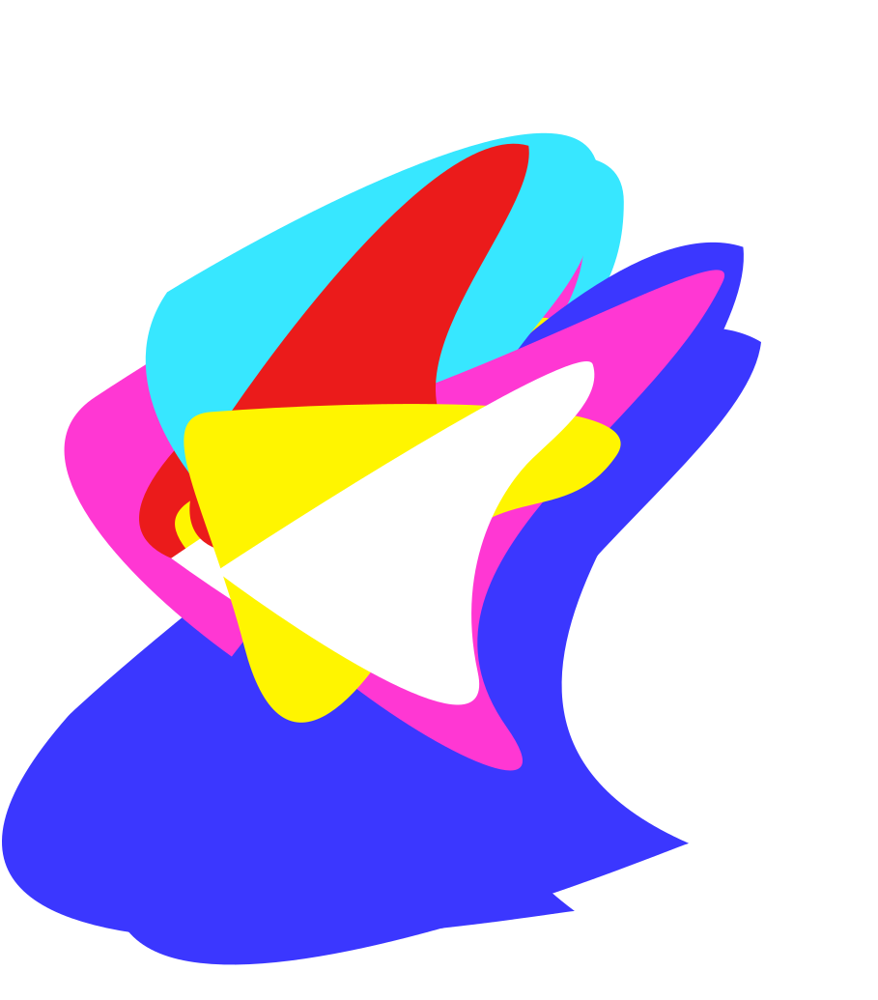
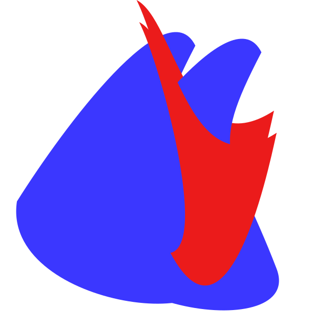
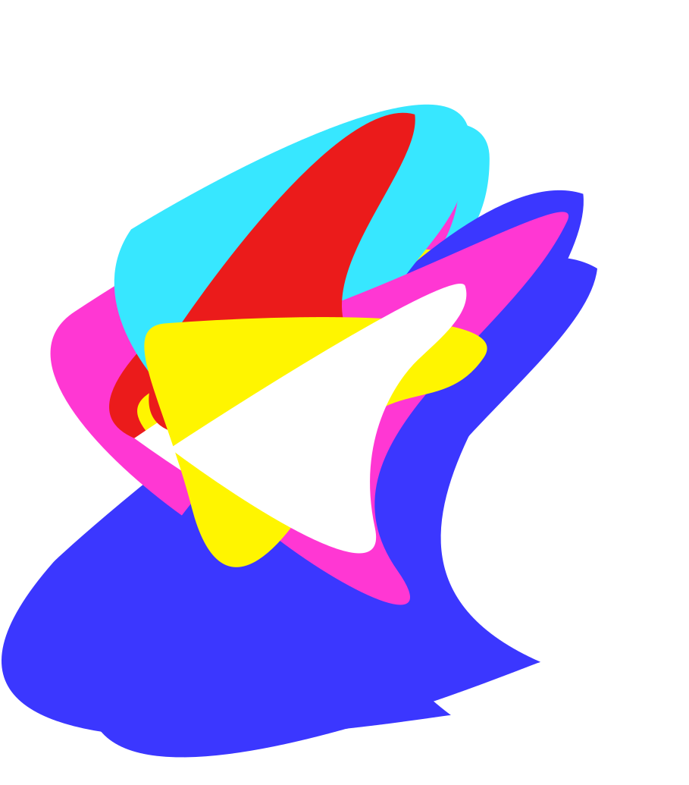
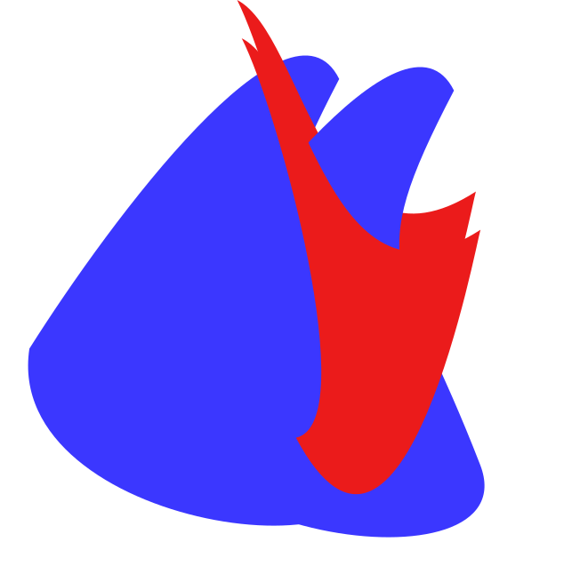

EN
LOG IN
SIGN UP
OVERVIEW
VISION
Blockchain technology ensures items that players win
or create are recorded and owned by the player.
All activities drive a cycle for NFT creation and commerce through player creativity and gameplay.
The model is simple, play games and make money.
or create are recorded and owned by the player.
All activities drive a cycle for NFT creation and commerce through player creativity and gameplay.
The model is simple, play games and make money.
CRYPTO SPACE